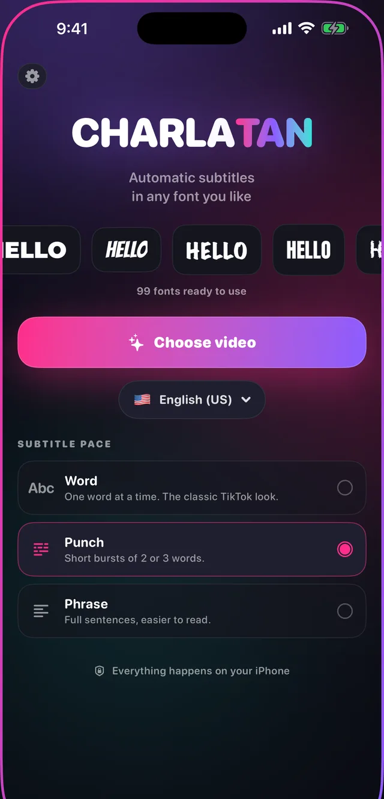

How to add subtitles to a video on iPhone
Most video is watched with the sound off. That is the whole reason this question gets asked so often: a clip without captions is a clip most people scroll past before they know what it was about.
There are three real ways to do it on an iPhone alone, and they are not equivalent. Here is what each one actually gives you, and which one to pick.

Option 1: the platform's own captions
TikTok, Instagram and YouTube all generate captions for you after you upload. It is free and it takes one tap, and for a lot of people that is enough.
The catch is that you are handing over the look. You get that platform's font, that platform's placement, and a caption that only exists on that platform: repost the same video somewhere else and it is bare again. You also cannot fix a misheard word without re-uploading.
Option 2: iMovie or a general video editor
iMovie is already on the phone and it can put text on a clip. What it cannot do is listen to your audio: there is no automatic transcription, so you are typing every line yourself and dragging it to the right moment by hand.
For a thirty second clip that is ten or fifteen minutes of work. For anything longer it stops being realistic, which is why almost nobody does it twice.
Option 3: a dedicated subtitle app
A subtitle app does the part that is tedious, listening and typing, and leaves you the part that is creative: how it looks. The good ones transcribe automatically, sync each word to when it was said, and render the captions into the video file so they travel with it.
The thing worth checking before you pick one is whether it runs on the phone or ships your audio to a server, and how much control you get over the type. Those two decide whether the app is fast and private, and whether your videos end up looking like yours or like everyone else's.
How to do it in Charlatan
- Open Charlatan and tap Choose video to take a clip from your library, or Record to shoot one right there.
- Set the audio language if it is not already right, then let it transcribe. This runs on the iPhone, so it works with no connection and nothing is uploaded.
- Pick a font. There are 99, grouped by category, and each one previews on your own video before you commit.
- Choose a pace (one word at a time, short punches, or full sentences) then set size, colour, outline and position. Drag the caption anywhere in the frame and pinch to resize it.
- Tap Export. The subtitles are rendered into the video file itself, ready to post anywhere without a separate subtitle file.
Questions people also ask
Can I add subtitles to a video on iPhone without an app?
Yes, but only in a limited way. TikTok, Instagram and YouTube each generate captions after upload, and iMovie lets you type text manually. Neither gives you automatic transcription plus control over the font, and the platform versions only exist on that platform.
How long does it take to subtitle a video on an iPhone?
With automatic transcription, a thirty second clip takes about two minutes end to end, and most of that is you choosing how it looks. Typing captions by hand in a general editor takes ten to fifteen minutes for the same clip.